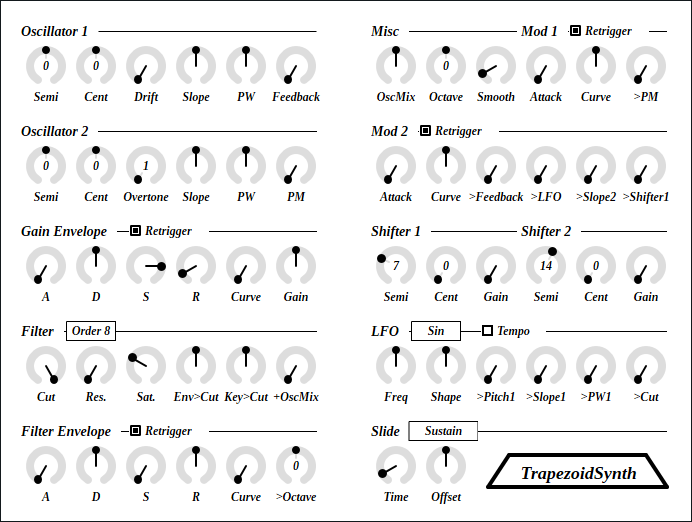
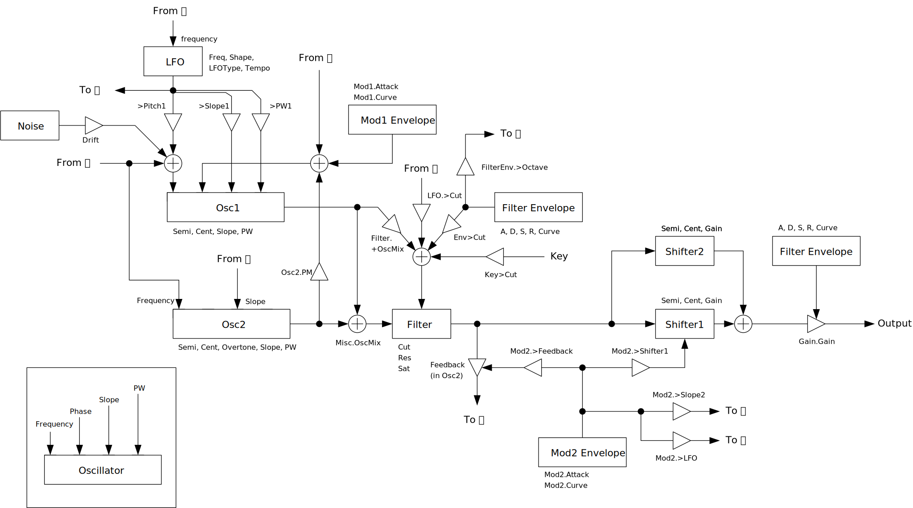

full - VST 3 をダウンロード (github.com) macOS - VST 3 をダウンロード (github.com) Update: 2023-12-02

TrapezoidSynth は台形オシレータを使ったモノフォニックシンセサイザです。台形オシレータは PTR (Polynomial Transition Regions) という手法に基づいて作ったのですが、ピッチが高くなると逆にノイズが増える欠点があるので 8 倍のオーバーサンプリングをしています。コードを作るために 2 つの AM ピッチシフタを搭載しています。
full - VST 3 をダウンロード (github.com) macOS - VST 3 をダウンロード (github.com) full パッケージには次のビルドが含まれています。
Linux ビルドは Ubuntu 22.04 でビルドしています。もし Ubuntu 22.04 以外のディストリビューションを使っているときは、プラグインが読み込まれないなどの不具合が起こることがあります。この場合はビルド手順に沿ってソースコードからビルドしてください。
macOS で使用するときは macOS
パッケージのダウンロードを推奨します。また Apple Developer Program
に加入していないので、インストール時に Gatekeeper
を迂回するように設定する必要があります。詳細は
インストール -> macOS
の節を参照してください。
何かあれば GitHub
のリポジトリに issue を作るか ryukau@gmail.com
までお気軽にどうぞ。
paypal.me/ryukau から開発資金を投げ銭することもできます。現在の目標はよりよい macOS サポートのための M1 mac の購入資金を作ることです。 💸💻
名前が .vst3 で終わるディレクトリを OS
ごとに決められた位置に配置してください。
/Program Files/Common Files/VST3/
に配置します。$HOME/.vst3/ に配置します。/Library/Audio/Plug-ins/VST3/ あるいは
/Users/$USERNAME/Library/Audio/Plug-ins/VST3/
に配置します。DAW によっては上記とは別に VST3 をインストールできるディレクトリを提供していることがあります。詳しくは利用している DAW のマニュアルを参照してください。
注意: プリセットの無いプラグインもあります。
プリセットはページの最上部のリンクからダウンロードできるプラグインパッケージに含まれています。以下はプリセットのインストール手順です。
presets ディレクトリ内の Uhhyou
ディレクトリを OS ごとに決められたディレクトリに配置。以下は OS ごとのプリセットの配置先の一覧です。
/Users/$USERNAME/Documents/VST3 Presets$HOME/.vst3/presets/Users/$USERNAME/Library/Audio/Presetsプリセットディレクトリの名前はプラグインと同じである必要があります。配置先のディレクトリが無いときは作成してください。
プラグインが DAW に認識されないときは C++ redistributable
をインストールしてみてください。インストーラは次のリンクからダウンロードできます。ファイル名は
vc_redist.x64.exe です。
Ubuntu 22.04 では次のパッケージのインストールが必要です。
sudo apt install libxcb-cursor0 libxkbcommon-x11-0もし DAW がプラグインを認識しないときは、下のリンクの
Package Requirements を参考にして VST3
に必要なパッケージがすべてインストールされているか確認してください。
REAPER の Linux 版がプラグインを認識しないときは
~/.config/REAPER/reaper-vstplugins64.ini を削除して REAPER
を再起動してみてください。
重要: full
パッケージは動作未確認です。以下のファイルは codesign
されていないので削除する必要があるかもしれません。
Contents/Resources/DocumentationContents/x86_64-linuxContents/x86_64-winmacOS
パッケージでは上記のファイルの削除は不要です。また、すべてのパッケージは
codesign コマンドの ad-hoc signing
の状態になっています。
プラグインの初回起動時に「破損している」という趣旨のメッセージが表示されることがあります。この場合は、ターミナルを開いて、解凍した
.vst3
ディレクトリに次のコマンドのどちらか、あるいは両方を適用してみてください。
/path/to/PluginName.vst3
の部分はインストールしたプラグインのパスに置き換えてください。
xattr -rd com.apple.quarantine /path/to/PluginName.vst3
xattr -rc /path/to/PluginName.vst3プラグインは署名されていない (unsigned) 、または公証されていない (un-notarized) アプリケーションとして認識されることがあります。この場合は、警告メッセージが表示された後に、システム環境設定を開いて「セキュリティとプライバシー」 → 「一般」の「このまま開く」ボタンを押してください。以下にリンクした Apple 公式のヘルプページにスクリーンショット付きで同じ手順が掲載されています。「ノータリゼーションを受けていない App や未確認の開発元の App を開きたい場合」を参照してください。
ここまでの手順を経てまだ動かないときはインストール先を
/Library/Audio/Plug-ins/VST3/ あるいは
/Users/$USERNAME/Library/Audio/Plug-ins/VST3/
のいずれか使っていなかったほうに変えてみてください。
上記の方法がすべて上手くいかなかったときは以下の手順を試してみてください。
sudo spctl --master-disable
を実行。上記の手順を実行するとシステムのセキュリティが弱くなるので注意してください。元に戻すには以下の手順を実行してください。
sudo spctl --master-enable
を実行。codesign の適用注意 この節の内容は macOS
パッケージには関連しないと考えられますが未検証です。 (GitHub の
issue)
full
パッケージを利用する場合は以下のコマンドを適用することで利用できるかもしれません。
sudo codesign --force --deep -s - /path/to/PluginName.vst3codesign の利用には Xcode
のインストールが必要となるかもしれません。
初回設定時は手動で次のファイルを作成してください。
/Users/ユーザ名/AppData/Roaming/UhhyouPlugins/style/style.json
。$XDG_CONFIG_HOME/UhhyouPlugins/style/style.json 。
$XDG_CONFIG_HOME が空のときは
$HOME/.config/UhhyouPlugins/style/style.json 。/Users/$USERNAME/Library/Preferences/UhhyouPlugins/style/style.json
。プラグインのウィンドウを開くたびに style.json
が読み込まれて更新されます。
既存の色のテーマを次のリンクに掲載しています。
style.json にコピペして使ってください。
style.json の設定例です。
{
"fontFamily": "Tinos",
"fontBold": true,
"fontItalic": true,
"foreground": "#000000",
"foregroundButtonOn": "#000000",
"foregroundInactive": "#8a8a8a",
"background": "#ffffff",
"boxBackground": "#ffffff",
"border": "#000000",
"borderCheckbox": "#000000",
"borderLabel": "#000000",
"unfocused": "#dddddd",
"highlightMain": "#0ba4f1",
"highlightAccent": "#13c136",
"highlightButton": "#fcc04f",
"highlightWarning": "#fc8080",
"overlay": "#00000088",
"overlayHighlight": "#00ff0033"
}以下はフォントオプションの一覧です。
fontFamily: フォントファミリ名。fontBold: ボールドスタイル (太字) を true
で有効、 false で無効。fontItalic: イタリックスタイル (斜体) を
true で有効、 false で無効。カスタムフォントを使用するには、プラグインディレクトリの
*.vst3/Contents/Resources/Fonts に *.ttf
ファイルを配置します。
注意: fontFamily 、
fontBold 、 fontItalic
で設定したフォントファミリ名とスタイルの組み合わせが
*.vst3/Contents/Resources/Fonts 以下のいずれかの
*.ttf ファイルに含まれていないときは VSTGUI
が指定するデフォルトフォントが使用されます。
fontFamily が長さ 0 の文字列 ""
のときはフォールバックとして "Tinos"
に設定されます。長さが 1
以上かつ、存在しないフォントファミリ名が指定されると VSTGUI
が指定するデフォルトフォントが使用されます。
ボールドあるいはイタリック以外のスタイルは VSTGUI がサポートしていないので動作確認していません。該当する例としては Noto フォントの Demi Light や、 Roboto フォントの Thin や Black などがあります。
16 進数カラーコードを使っています。
プラグインはカラーコードの 1 文字目を無視します。よって
?102938 や \n11335577
も有効なカラーコードです。
2 文字目以降のカラーコードの値に 0-9a-f
以外の文字を使わないでください。
以下は設定できる色の一覧です。設定に抜けがあるとデフォルトの色が使われます。
foreground: 文字の色。foregroundButtonOn: オンになっているボタンの文字の色。
foreground か boxBackground
のいずれかと同じ値にすることを推奨します。foregroundInactive: 非アクティブなタブの文字の色。background: 背景色。boxBackground: 矩形の UI 部品の内側の背景色。border: 縁の色。borderCheckbox: チェックボックスの縁の色。borderLabel:
パラメータセクションのラベルの左右の直線の色。unfocused:
つまみがフォーカスされていないときの色。highlightMain:
フォーカスされたときの色。スライダの値の表示にも使用されます。highlightAccent:
フォーカスされたときの色。一部のプラグインをカラフルにするために使用されます。highlightButton:
ボタンがフォーカスされたときの色。highlightWarning: 変更に注意を要する UI
がフォーカスされたときの色。overlay: オーバーレイの色。overlayHighlight:
フォーカスを示すオーバーレイの色。パラメータが割り当てられているコントロールの上で 右クリック すると、 DAW から提供されるコンテキストメニューが開きます。
つまみと数値スライダでは次の操作ができます。
SlideType を Reset to 0
にすると極端に低い周波数が出るので、ハイパスフィルタをかけることを推奨します。
図が小さいときはブラウザのショートカット Ctrl + マウスホイール や、右クリックから「画像だけを表示」などで拡大できます。
図で示されているのは大まかな信号の流れです。実装と厳密に対応しているわけではないので注意してください。

ピッチを半音単位で変更します。
ピッチをセント単位で変更します。 100 セント = 1 半音です。
台形の両端の傾きです。
台形の上辺の長さです。 Pulse Width の略です。
ホワイトノイズでピッチを変調します。
Oscillator 1 の位相をフィードバックで変調します。
osc1Phase += Feedback * (osc1 + OscMix * (osc2 - osc1))周波数を Overtone 倍にします。
Oscillator 1 の位相を Oscillator 2 の出力で変調します。
チェックを入れると鍵盤が押されるたびにエンベロープをリセットします。チェックが外れているときは、同時に押している鍵盤の数が 0 から 1 以上になったときだけエンベロープをリセットします。
アタック時間の秒数です。アタックは音が最大音量に到達するまでのエンベロープの区間です。
ディケイ時間の秒数です。ディケイはアタックが終わった後にエンベロープが減衰する区間です。
サステインの大きさです。サステインはディケイが終わったのエンベロープの出力の大きさです。
リリース時間の秒数です。エンベロープは、鍵盤から指を離した時点（ノートオフ）からリリース状態に移行して、出力が 0 になるまで減衰します。
エンベロープの特性を変更します。
出力音量です。
フィルタの次数です。 TrapezoidSynth では 1 次フィルタを 8
個直列につないでいます。 Order
の値によってフィルタから信号を取り出す位置を変更しています。
カットオフ周波数です。
レゾナンスの強さです。
フィルタのサチュレーションの強さです。
filterInput = tanh(Sat * (input + Res * filterOutput))Filter Envelope による Cut の変調量です。
鍵盤の高さによる Cut の変調量です。
Oscillator 1 と Oscillator 2 をミックスした信号による
Cut の変調量です。
Filter Envelope の出力を使ってピッチをオクターブ単位で変調する量です。
Osillator 1 と Oscillator 2 の比率です。左いっぱいに回すと Oscillator 1 の音だけになります。
ピッチをオクターブ単位で変更します。
パラメータを変更したときに変更前の値から変更後の値に移行する秒数です。次のパラメータに影響します。
DriftSlopePW （同名のパラメータすべて）Feedback （同名のパラメータすべて）PMGain （同名のパラメータすべて）CutResSatEnv>CutKey>Cut+OscMixOscMix>PM>Feedback>LFO>Slope2>Shifter1Shifter1.SemiShifter1.CentShifter2.SemiShifter2.CentFreqShape>Pitch1>Slope1>PW1>Cutチェックを入れると鍵盤が押されるたびにエンベロープをリセットします。チェックが外れているときは、同時に押している鍵盤の数が 0 から 1 以上になったときだけエンベロープをリセットします。
モジュレーションエンベロープのアタック時間の秒数です。
モジュレーションエンベロープの特性です。
Oscillator2.PM をモジュレーションエンベロープ 1
で変調します。
Oscillator1.Feedback をモジュレーションエンベロープ 2
で変調します。
LFO.Freq をモジュレーションエンベロープ 2
で変調します。
Oscillator2.Slope をモジュレーションエンベロープ 2
で変調します。
Shifter 1 のピッチをモジュレーションエンベロープ 2 で変調します。
半音単位でピッチシフトの量を変更します。
セント単位でピッチシフトの量を変更します。
ピッチシフトした信号を足し合わせる大きさです。
LFO の波形の種類を次の 4 つから選択できます。
Sin : サイン波です。 出力は Shape
乗されます。Saw : 鋸歯波です。 Shape
によって三角波にもできます。Pulse : 矩形波です。 Shape
によってデューティ比を変更できます。Noise : ブラウンノイズです。 Shape
によってステップあたりの移動量を変更できます。LFO の周波数をテンポシンクします。
LFO の周波数です。
LFO の波形を変更します。
LFO による Oscillator 1 のピッチの変調量です。
LFO による Oscillator1.Slope の変調量です。
LFO による Oscillator1.PW の変調量です。
LFO による Filter.Cut の変調量です。
ピッチスライドの種類を変更できます。
Always :
常に最後に演奏されたノートのピッチからスライドします。Sustain : 2
つ以上の鍵盤が同時に押されたときだけスライドします。Reset to 0 : 同時に押している鍵盤の数が 0 から 1
、あるいは 1 から 0 になるときは 0 Hz
にスライドします。それ以外の場合は他の 2
つと同じようにスライドします。ピッチスライドにかかる時間です。
Oscillator 1 のスライド時間に対する Oscillator 2 のスライド時間の比率です。
style.json
によりプラグインがクラッシュするバグを修正。foregroundInactive の色を変更。processContext が nullptr であるために
Audacity で音が正しく出力されなかったバグを修正。virtual を追加。style.json
でカスタムフォントを設定するオプションを追加。bypass
パラメータの挙動を修正。この修正によって、ホストがミュート中のプラグインにノートを送り続けても、ミュート解除とともにそれまでに送られたノートがすべて再生されなくなった。このバグは
VST 3 の bypass
パラメータを正しく実装しているホストでのみ発生していた。Slide->Time の値が無視されて、 Smooth
の値を使うようになっていたバグを修正。1.10
では正しく修正されていなかった。Slide->Time の値が無視されて、 Smooth
の値を使うようになっていたバグを修正。kFxInstrument から
kInstrumentSynth に修正。TrapezoidSynth のライセンスは GPLv3 です。 GPLv3 の詳細と、利用したライブラリのライセンスは次のリンクにまとめています。
リンクが切れているときは ryukau@gmail.com
にメールを送ってください。
VST is a trademark of Steinberg Media Technologies GmbH, registered in Europe and other countries.